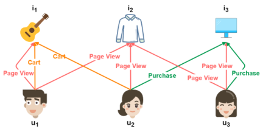
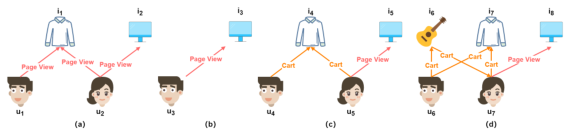

Behavior Pattern Mining-based Multi-Behavior Recommendation (基于行为模式挖掘的多行为推荐)
- 会议/期刊: SIGIR 2024 (短论文, 5 pages)
- 作者与机构: Haojie Li, Jinhuan Liu, Junwei Du (青岛科技大学); Zhiyong Cheng (合肥工业大学); Xu Yu (中国石油大学); Guanfeng Liu (Macquarie University)
- 推荐链路定位: 召回 (候选全库打分)
- 研究方向: 协同过滤与双塔召回 / 图神经网络与知识图谱推荐
- 论文原文: https://arxiv.org/abs/2408.12152v1
- 开源代码: https://github.com/rookitkitlee/BPMR
TL;DR (1分钟核心速览)
多行为推荐普遍依赖 GNN 在异构/分行为子图上做消息传递，导致细粒度行为组合模式被邻居聚合"抹平"，且陷入过平滑与深层堆叠开销。BPMR 把用户—物品间的行为模式路径计数（如 PageView∘PageView∘Cart）当作显式特征，用贝叶斯似然比闭式打分排序，无需梯度训练。在 Beibei/Taobao/IJCAI-Contest 三个数据集、Leave-One-Out + Full-Ranking 协议下，Recall@10 相对最优基线 MBSSL 提升 118.66%/291.92%/393.98%。
Background & Motivation (背景与核心矛盾)
- 主流范式: 多行为推荐分两支——「分解增强」先按行为拆子图独立嵌入（S-MBRec、MBSSL 用自监督迁移辅助行为结构），「统一编码」把多行为图当异构图上做 GCN 消息传递（GHCF、MBGMN）。
- 前人局限: ①分解式只编码单行为子图，无法刻画跨节点、跨行为的组合路径（如 \(u_1\)浏览\(i_2\)、\(u_2\)也浏览\(i_2\)并购买\(i_3\)所隐含的\(u_1\!\to\!i_3\) 兴趣传递）；②统一编码把不同邻居、不同行为的信号混合进同一向量，丢失特定模式的可辨识性，并随层数加深过平滑。
- 核心洞察 (Key Insight): 图结构预测往往只依赖少数特定结构特征（某种长度与行为类型组合的路径条数），因此不必学稠密嵌入，可直接把"模式路径计数"作为判别特征。
- 本文切入点: 将多行为图枚举出的路径数当作特征、目标行为共现当作标签，用朴素贝叶斯似然比做闭式推断，从根上绕开 GNN 的过平滑与训练成本。

Method (核心方法设计)
1. 整体框架 (Overall Architecture)
输入各行为的 0/1 交互矩阵 \(\{E^{b}\}_{b\in\mathcal{B}}\)；先按预定义模式集\(\mathcal{T}\)（长度为\(1,3,\dots,2\alpha+1\)的行为序列，且剔除含目标行为的模式，因为路径必须从用户出发止于物品，长度只能为奇数）为每个\((u,i)\)对统计路径条数\(N^{f}_{u,i}\)，该步骤等价于稀疏矩阵连乘，GPU 可加速；随后对特征做 z-score 归一化，用全语料统计出的似然比权重对候选物品做乘性打分，按 odds 降序生成推荐列表。整个过程无参数、无迭代训练、无负采样，只做一次模式计数+一次打分。
flowchart TD
A["多行为交互矩阵 E^b"] --> B["模式集枚举 T (len=1,3,..,2α+1, 去目标行为)"]
B --> C["路径计数 N^f = E_b1 E_b2^T E_b3 (GPU稀疏乘)"]
C --> D["z-score 归一化"]
D --> E["贝叶斯似然比打分 O_u,i"]
E --> F["全库排序输出 Top-K"]2. 关键设计拆解 (Key Designs)
-
行为模式特征化（把"结构"变成"列"）：O(\(|B|^l\)) 模式中真正有判别力的是少数几类；BPMR 直接用路径条数\(N^{f}_{u,i}\)作特征，例如\(N^{v\circ v\circ c}_{u_3,i_1}=2\)表示存在两条"浏览-浏览-加购"链。由于三跳模式可写作\(E_{b_1}E_{b_2}^{\top}E_{b_3}\)，原本昂贵的路径挖掘退化为 3 次稀疏矩阵乘，这是方法能落地的关键工程洞察。
-
贝叶斯似然比闭式打分（免训练的判别器）：把多行为推荐转成"给定模式计数预测目标行为"的二分类，则 $\(O_{u,i}=\frac{P(Y{=}1\mid\mathcal{T},N_{u,i})}{P(Y{=}0\mid\mathcal{T},N_{u,i})}\propto\prod_{f\in\mathcal{T}}\Big(\frac{P(f\mid Y{=}1)}{P(f\mid Y{=}0)}\Big)^{N^{f}_{u,i}}\)$ 其中 \(P(f\mid Y{=}1)\)、\(P(f\mid Y{=}0)\)由全语料共现频次统计得到。取对数后即\(\log O_{u,i}=\sum_{f}N^{f}_{u,i}\cdot w_{f}\)，\(w_f\) 是固定权重——本质是一个权重闭式解出的线性 log-count 模型。物理直觉：某模式在"已购买"对中出现的相对频率越高，权重越大，其计数就成为正证据；不同行为类型（浏览 vs 加购）因条件概率不同而自动获得不同可信度，无需人工设权。
-
训练目标、负采样与推理效率：无损失函数、无负采样；超参仅 \(\alpha\)（原文取\(\alpha=1\)，即用长度 1 与 3 的模式），理由是三跳邻居已覆盖 Taobao 平均用户 97.12% 的物品。推理开销在于为全部\((u,i)\)计算\(|\mathcal{T}|\)个\(|U|\times|I|\) 计数矩阵，需 GPU 稀疏乘与分块存储。

Experimental Setup & Evaluation Protocol (实验设置与评估协议)
- 数据集与预处理: 三个公开电商数据集，均为"浏览/加购/收藏/购买"多行为日志；原文未显式声明 \(k\)-core 过滤细节。
| 数据集 | #Users | #Items | #Interactions | 行为类型 | 场景说明 |
|---|---|---|---|---|---|
| Beibei | 21,716 | 7,977 | 3,338,068 | PV, Cart, Purchase | 母婴电商 |
| Taobao | 48,749 | 39,493 | 1,952,931 | PV, Cart, Purchase | 淘宝，物品数最多 |
| IJCAI-Contest | 17,237 | 33,799 | 811,582 | PV, Favorite, Cart, Purchase | B2C 零售，行为类别最多 |
- 数据划分与防穿越:
Leave-One-Out（每用户留最后一次目标行为作测试）。 - 排名评测协议: 无偏
Full-Ranking，对每个用户对全库物品排序并剔除已交互正例；指标 Recall@{10,50}、NDCG@{10,50}。 - 对比基线与超参: 单行为 NGCF / LightGCN / SGL / SimGCL，多行为 MATN / MBGMN / CML / EHCF / S-MBRec / GHCF / MBSSL；BPMR 关键超参 \(\alpha=1\)，特征 z-score 归一化。原文未报告显著性检验与嵌入维度。
Key Experimental Results (实验关键数据)
1. 主实验对比 (Main Results)
| 模型 | Beibei R@10 | Beibei N@10 | Taobao R@10 | Taobao N@10 | IJCAI R@10 | IJCAI N@10 |
|---|---|---|---|---|---|---|
| LightGCN | 0.0555 | 0.0285 | 0.0410 | 0.0226 | 0.0276 | 0.0149 |
| SGL | 0.0590 | 0.0305 | 0.0503 | 0.0279 | 0.0262 | 0.0161 |
| SimGCL | 0.0615 | 0.0303 | 0.0502 | 0.0282 | 0.0285 | 0.0158 |
| MBGMN | 0.0416 | 0.0233 | 0.0497 | 0.0250 | 0.0307 | 0.0174 |
| EHCF | 0.1532 | 0.0808 | 0.0712 | 0.0401 | 0.0267 | 0.0148 |
| S-MBRec | 0.1705 | 0.0865 | 0.0814 | 0.0448 | 0.0285 | 0.0147 |
| GHCF | 0.1933 | 0.1011 | 0.0817 | 0.0435 | 0.0315 | 0.0172 |
| MBSSL | 0.2235 | 0.1271 | 0.1027 | 0.0583 | 0.0399 | 0.0207 |
| BPMR | 0.4887 | 0.2500 | 0.4025 | 0.2233 | 0.1971 | 0.0961 |
| Improv.% | +118.66% | +96.70% | +291.92% | +283.02% | +393.98% | +364.25% |
2. 消融实验 (Ablation Study)
原文未提供逐组件消融表，仅以模式长度超参与鲁棒性实验替代，此处如实汇总其证据强度：
| 设置 / 变体 | 观测指标 | 原文结论 |
|---|---|---|
| \(\alpha=1\)（长度 1+3 模式） | Recall/NDCG@{10,50} | 兼顾性能与成本的最优设置，\(\alpha=0,2\) 的数值未报告 |
| 目标行为模式从 \(\mathcal{T}\) 中剔除 | — | 避免标签自证，仅作设计约束说明 |
| 按目标行为度数分 5 组用户 | NDCG@50 | 各稀疏度分组均优于所有基线（图 3） |
| 辅助行为注入 10%/20%/30%/40% 随机噪声 | NDCG/Recall | 各噪声水平仍最优，归因于模式权重自适应下调（图 4） |
3. 关键实验发现 (Key Findings)
- 增益随"行为类别数"与"物品规模"放大：Taobao（39,493 物品）与 IJCAI-Contest（4 类行为）上的相对提升（+291.92%、+393.98% R@10）远高于 Beibei（+118.66%），说明模式路径计数在候选空间大、行为组合丰富时信息量更高，而在小物品集上收益被压缩。
- 对目标行为稀疏性不敏感：按购买度数分 5 组后 BPMR 在所有组均领先，作者归因于使用的是"路径比例/条数"这类与节点度数弱相关的结构量，度数下降时模式密度同步缩放，评分尺度不失衡。
- 对辅助行为噪声具备一定鲁棒性：在 10%–40% 随机噪声下仍全面领先，机制上是因为噪声模式在 \(P(f\mid Y{=}1)\)与\(P(f\mid Y{=}0)\) 中同时抬升、似然比权重被自动削弱，无需额外去噪模块。
Highlights & Limitations (亮点、对比与审稿批判)
- 与代表作对比 (vs. Prior Work): MBSSL/S-MBRec 走"分行为子图 + 自监督迁移"，靠对比学习间接传递辅助行为信息，但从不显式建模 \(b_1\!\circ\!b_2\!\circ\!b_3\) 组合；GHCF 用异构 GCN 统一编码，多层聚合把具体行为语义糊化。BPMR 的差别是用可枚举的结构特征替代学习式表征，把"表示学习"问题降维成"计数+加权"。
- 可迁移亮点: ①把 \(l\)跳行为模式计数写成\(\prod E_{b}\) 稀疏矩阵乘，可作为任何 GNN 推荐的结构特征增强项（拼到双塔输入端）；②对数似然比闭式权重可用于冷启动场景的快速先验打分，或作为精排模型的先验偏置特征。
- 审稿级局限批判: ①\(P(f\mid Y{=}1)\)/\(P(f\mid Y{=}0)\)在全量交互（含测试标签\(E^{|B|}\)）上统计，存在标签泄露风险，且 100%–400% 的异常提升幅度提示需核对基线复现与划分一致性；②推理需为每个模式保存一张\(|U|\times|I|\)计数矩阵，长度 3 时组合数\(|\mathcal{B}|^3\)增长，存储与算力随\(\alpha\) 与行为数急剧膨胀；③模型无任何可学习嵌入，无法利用内容特征，对零路径新用户/新物品退化为先验，冷启动能力未验证。
Rating (四维评分)
- 方法创新性 (Novelty): ⭐⭐⭐⭐ （把多行为推荐重构为路径计数+朴素贝叶斯似然比，视角反潮流且数学上等价于闭式 log-count 线性模型，洞见清晰）
- 评估协议与实验扎实度 (Protocol & Experiments): ⭐⭐⭐ （Full-Ranking 与三数据集跨度值得肯定，但缺逐组件消融、无显著性检验，且似然比统计疑似使用测试标签，增益幅度需复核）
- 写作与数学规范度 (Clarity & Rigor): ⭐⭐⭐⭐ （模式定义、矩阵乘加速与打分公式推导简洁自洽，但 \(\mathcal{T}\)的枚举边界与\(\alpha\) 选择依据说明偏薄）
- 工业落地与复现价值 (Industrial & Practical Value): ⭐⭐⭐⭐ （代码已开源、无训练无需调参、纯稀疏矩阵乘易上 GPU，天然适配召回侧离线特征；代价是计数矩阵存储随行为数与模式长度膨胀）